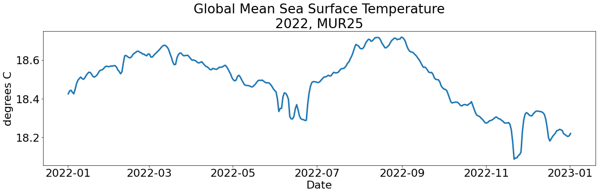

import earthaccess
import json
import boto3
import s3fs
import xarray as xr
import matplotlib as mpl
import matplotlib.pyplot as pltScale Scientific Analysis in the Cloud with AWS Lambda
From the PO.DAAC Cookbook, to access the GitHub version of the notebook, follow this link.
This tutorial demonstrates how to invoke an AWS Lambda function to create a timeseries of global mean sea surface temperature values.
IMPORTANT: This notebook will only run successfully after deploying the AWS Lambda function and supporting services to your own Amazon Web Services account.
See the full documentation to set up the prerequisite services.
** Note that using AWS Compute services will incur costs that will be charged to your AWS account. Running this tutorial as-configured with no modifications should result in less than $1 USD of charges. Expanding the analysis to a longer time period or different dataset will affect the compute costs charged to your AWS account.
PO.DAAC is not responsible for costs charged as a result of running this tutorial
Prerequisite Steps: Set up AWS infrastructure
This tutorial takes advantage of numerous AWS Services including Lambda, Parameter Store, Elastic Compute Cloud (EC2), Elastic Container Registry (ECR), and Simple Storage Service (S3).
After setting up and deploying all of the services as described in the documentation, this notebook must be run in an EC2 instance to invoke the functions and plot the results.
Connect to EC2 instance to run this notebook
This notebook cannot be run on a local computer, as it heavily depends on direct in-cloud access. To run this notebook in AWS, connect to an EC2 instance running in the us-west-2 region, following the instructions in this tutorial. Once you have connected to the EC2 instance, you can clone this repository into that environment, install the required packages, and run this notebook.
Step 1: Log in to Earthdata
We use the earthaccess Python library to handle Earthdata authentication for the initial query to find the granules of interest.
auth = earthaccess.login()EARTHDATA_USERNAME and EARTHDATA_PASSWORD are not set in the current environment, try setting them or use a different strategy (netrc, interactive)
You're now authenticated with NASA Earthdata Login
Using token with expiration date: 06/16/2023
Using .netrc file for EDLgranules = earthaccess.search_data(
short_name='MUR25-JPL-L4-GLOB-v04.2',
cloud_hosted=True,
temporal=("2022-01-01", "2023-01-01")
)Granules found: 365granule_paths = [g.data_links(access='direct')[0] for g in granules]for path in granule_paths:
print(path)
breaks3://podaac-ops-cumulus-protected/MUR25-JPL-L4-GLOB-v04.2/20220101090000-JPL-L4_GHRSST-SSTfnd-MUR25-GLOB-v02.0-fv04.2.ncStep 2: Invoke the Lambda function
Set up a boto3 session to connect to your AWS instance and invoke the Lambda function
session = boto3.Session(profile_name='saml-pub')
lambda_client = session.client('lambda', region_name='us-west-2')
s3_results_bucket = "podaac-sst"
for granule in granule_paths:
lambda_payload = {"input_granule_s3path": granule, "output_granule_s3bucket": s3_results_bucket, "prefix":"podaac"}
lambda_client.invoke(
FunctionName="podaac-sst",
InvocationType="Event",
Payload=json.dumps(lambda_payload)
)Step 3: Plot results as timeseries
Open the resulting global mean files in xarray:
# set up the connection to the S3 bucket holding the results
s3_results = s3fs.S3FileSystem(
anon=False,
profile='saml-pub'
)
s3_files = s3_results.glob("s3://" + s3_results_bucket + "/MUR25/*")
# iterate through s3 files to create a fileset
fileset = [s3_results.open(file) for file in s3_files]
# open all files as an xarray dataset
data = xr.open_mfdataset(fileset, combine='by_coords', engine='scipy')data<xarray.Dataset>
Dimensions: (time: 365)
Coordinates:
* time (time) datetime64[ns] 2022-01-01T09:00:00 ... 2023-01-01T09...
Data variables:
analysed_sst (time) float64 dask.array<chunksize=(1,), meta=np.ndarray>![]()
Plot the data using matplotlib:
mpl.rcParams.update({'font.size': 22})
# set up the figure
fig = plt.Figure(figsize=(20,5))
# plot the data
plt.plot(data.time, data.analysed_sst, linewidth='3')
plt.title('Global Mean Sea Surface Temperature' + '\n' + '2022, MUR25')
plt.ylabel('degrees C')
plt.xlabel('Date')Text(0.5, 0, 'Date')